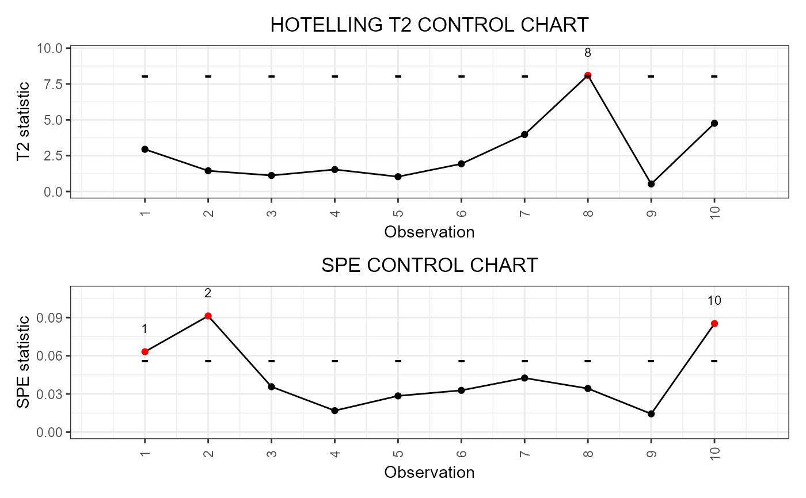

This function takes as input a data frame produced
with functions such as
control_charts_pca and control_charts_sof_pc and
produces a ggplot with the desired control charts, i.e.
it plots a point for each
observation in the phase II data set against
the corresponding control limits.
plot_control_charts(cclist)
| cclist | A |
|---|
A ggplot with the functional control charts.
Out-of-control points are signaled by colouring them in red.
library(funcharts) data("air") air <- lapply(air, function(x) x[1:100, , drop = FALSE]) fun_covariates <- c("CO", "temperature") mfdobj_x <- get_mfd_list(air[fun_covariates], n_basis = 15, lambda = 1e-2) mfdobj_y <- get_mfd_list(air["NO2"], n_basis = 15, lambda = 1e-2) mfdobj_y1 <- mfdobj_y[1:60] mfdobj_y_tuning <- mfdobj_y[61:90] mfdobj_y2 <- mfdobj_y[91:100] mfdobj_x1 <- mfdobj_x[1:60] mfdobj_x_tuning <- mfdobj_x[61:90] mfdobj_x2 <- mfdobj_x[91:100] mod_fof <- fof_pc(mfdobj_y1, mfdobj_x1) cclist <- regr_cc_fof(mod_fof, mfdobj_y_new = mfdobj_y2, mfdobj_x_new = mfdobj_x2, mfdobj_y_tuning = NULL, mfdobj_x_tuning = NULL) plot_control_charts(cclist)